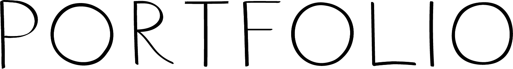

2024
'Aprendemos a hacer haciendo. No existe otra manera.'
Esta frase resume de alguna manera mi experiencia con el diseño, donde considero que los procesos son una parte fundamental. Cada proyecto es una oportunidad de aprender, crecer y seguir mejorando. Este portfolio es el reflejo de este camino de búsqueda hacia mi identidad como diseñadora.